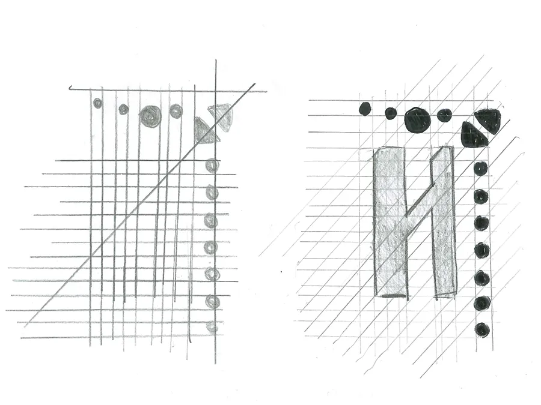
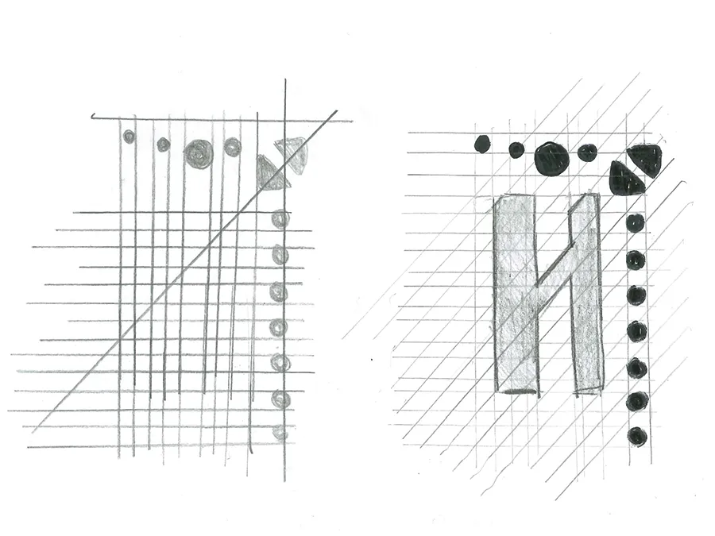
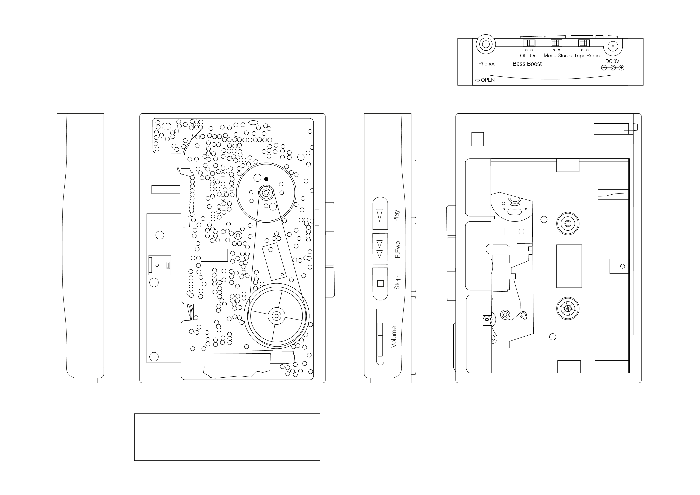
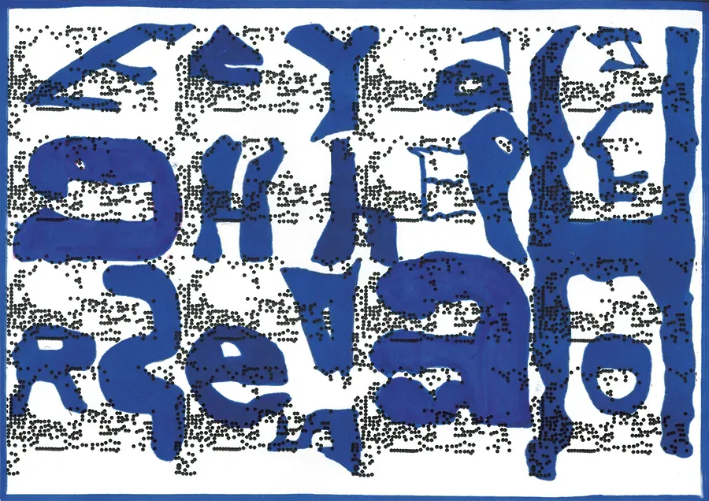
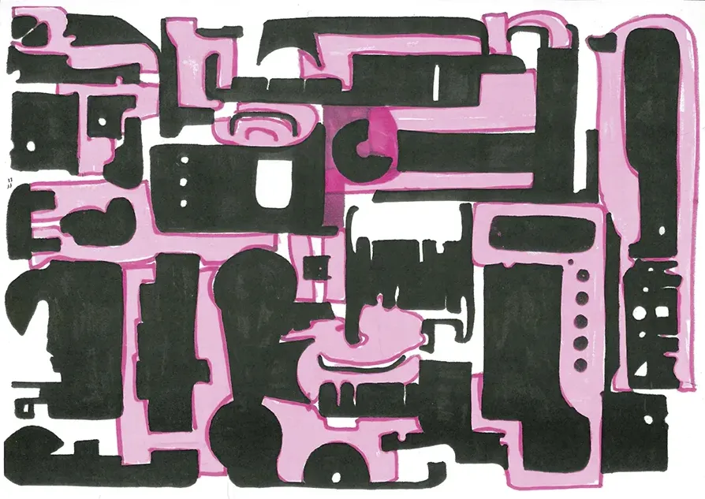
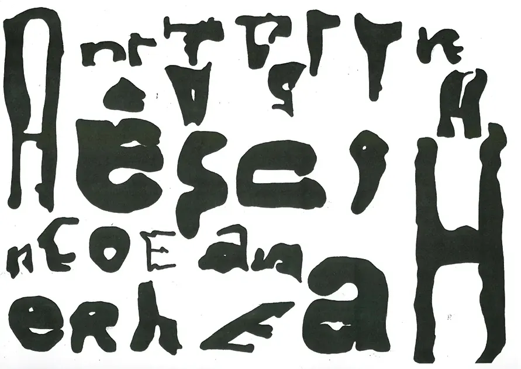
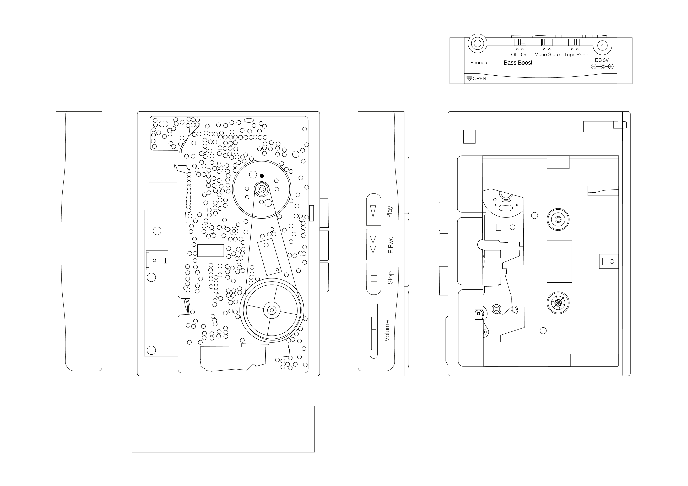
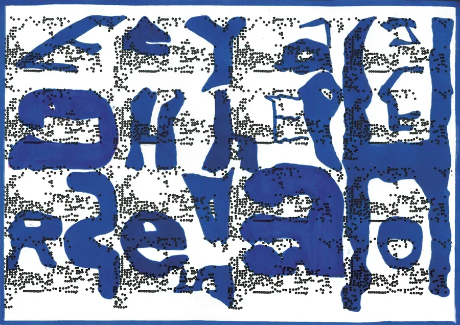
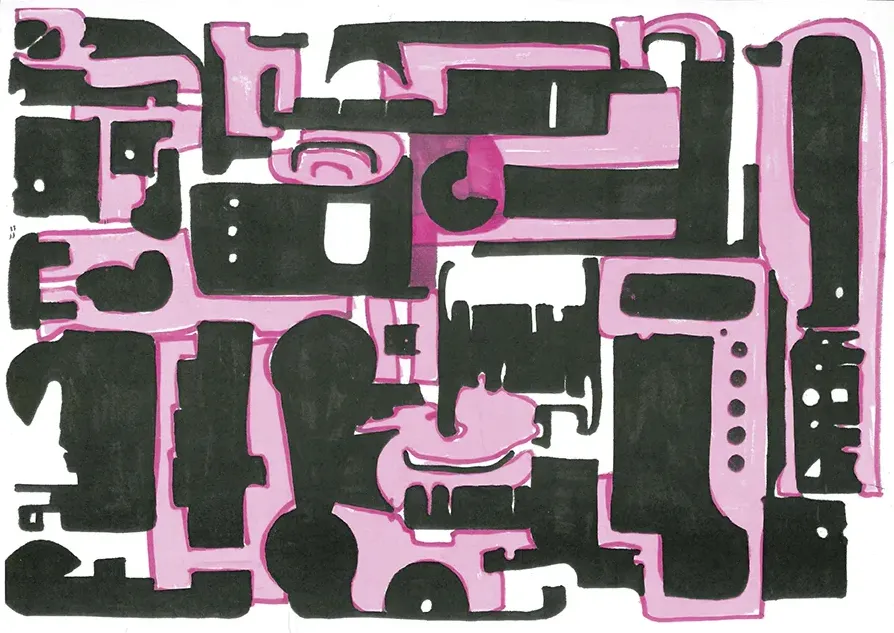
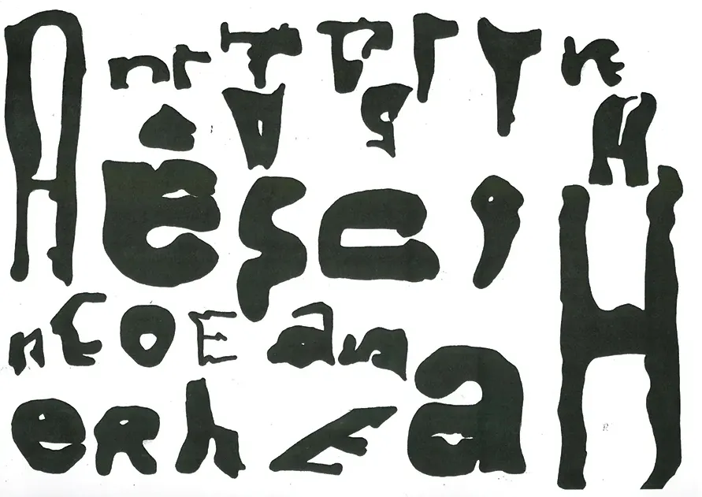

Typografie aus Technik
Schrauben, Platinen, Drähte, Formen. Der Retro-Kassettenplayer zerfällt in eine Sammlung technischer
Elemente. Seine Einzelteile werden zu Linien, Flächen und Strukturen – zu einer neuen visuellen Sprache. Aus
dieser Dekonstruktion entsteht die Schrift Bass Boost: kantig, klar und pulsierend. Die technischen
Komponenten des Geräts übersetzen sich in eine Typografie, die den Charakter des Objekts trägt. So wird aus
einem Stück Technik eine eigenständige gestalterische Identität.
Hidden Sounds of London
2025
EDITORIAL / FOTOGRAFIE / TEXTING
Dozent*innen:
/ Markus Wiki
/ Silvio Waser
/ Valeria Bongini
/ Siiri Tännler
@ Fachklasse Grafik Luzern
2025
EDITORIAL / FOTOGRAFIE / TEXTING
Dozent*innen:
/ Markus Wiki
/ Silvio Waser
/ Valeria Bongini
/ Siiri Tännler
@ Fachklasse Grafik Luzern

 

 






